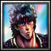
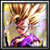

Player profile
kaneki-ken
Rank #9server.eurobattle.netSeason 2
Most played · 『Shadow』
Matches187 wins · 11 losses
Win rate39%
Avg K / D / A40.9 / 39.3 / 12.2
Avg APM95
Avg damage dealt279.5k
Avg damage taken176.2k
Heroes played
Explore heroes →| HERO | MATCHES | WIN RATE | AVG K / D / A | AVG DMG |
|---|---|---|---|---|
『Shadow』Most played | 7 | 43% | 37.4 / 40.1 / 11.1 | 265.1k |
Dante スパーダの息子 | 4 | 25% | 43.0 / 37.0 / 12.0 | 291.5k |
黒崎 一護 | 2 | 50% | 45.0 / 34.0 / 11.0 | 283.1k |
 Kenshiro | 1 | 100% | 31.0 / 41.0 / 17.0 | 250.6k |
Shirosaki | 1 | 100% | 23.0 / 45.0 / 20.0 | 254.2k |
Shadow | 1 | 0% | 46.0 / 46.0 / 14.0 | 300.1k |
孫悟飯 | 1 | 0% | 52.0 / 48.0 / 10.0 | 326.6k |
 孫 悟飯 | 1 | 0% | 61.0 / 31.0 / 10.0 | 311.2k |
Averages use recorded statistics only; unavailable historical values are shown as —.
Recent matches
Open a match for its scoreboard and kill matchups.
WIN66:40
MCB #1000067
08 Nov 2026 · 13:56 WIB
41.0 / 35.0 / 19.0View match →
WIN67:29
MCB #2000215
08 Nov 2026 · 00:26 WIB
25.0 / 48.0 / 19.0View match →
LOSS57:12
MCB #2000212
07 Nov 2026 · 17:03 WIB
34.0 / 40.0 / 13.0View match →
WIN60:08
MCB #2000208
06 Nov 2026 · 01:55 WIB
44.0 / 41.0 / 14.0View match →
LOSS67:10
MCB #2000207
05 Nov 2026 · 23:10 WIB
45.0 / 36.0 / 5.0View match →
LOSS58:18
MCB #2000200
02 Nov 2026 · 23:40 WIB
17.0 / 41.0 / 6.0View match →
LOSS74:55
MCB #2000186
29 Oct 2026 · 22:37 WIB
41.0 / 54.0 / 8.0View match →
WIN63:50
MCB #2000181
26 Oct 2026 · 23:01 WIB
31.0 / 41.0 / 17.0View match →
LOSS72:45
MCB #1000063
25 Oct 2026 · 23:19 WIB
46.0 / 46.0 / 14.0View match →
LOSS65:03
MCB #2000177
24 Oct 2026 · 20:54 WIB
36.0 / 37.0 / 9.0View match →